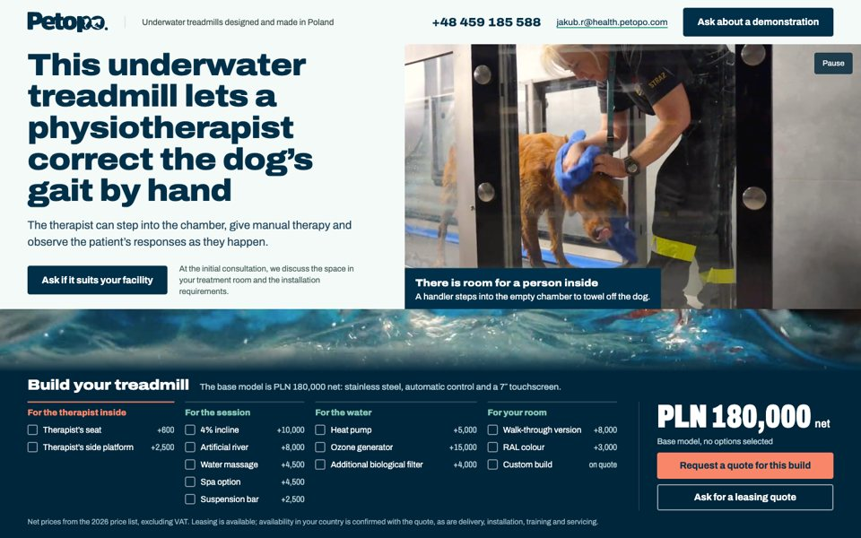
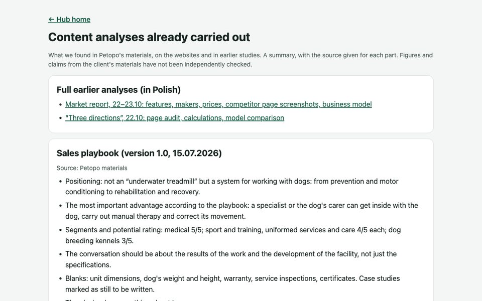
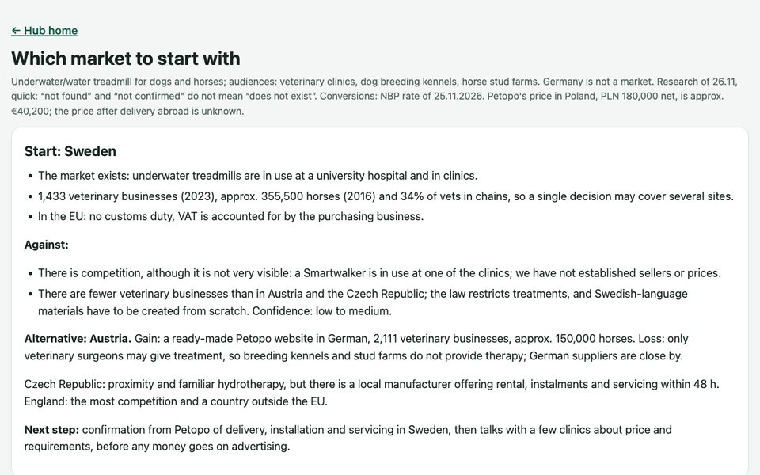
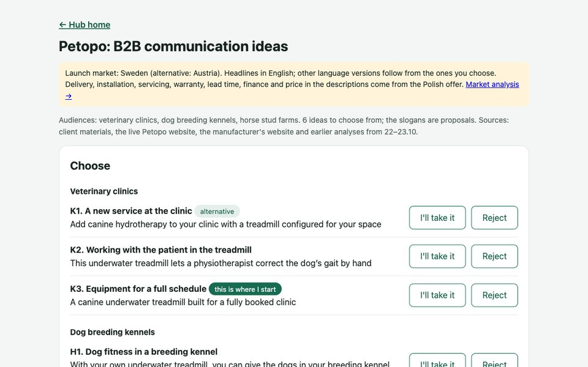
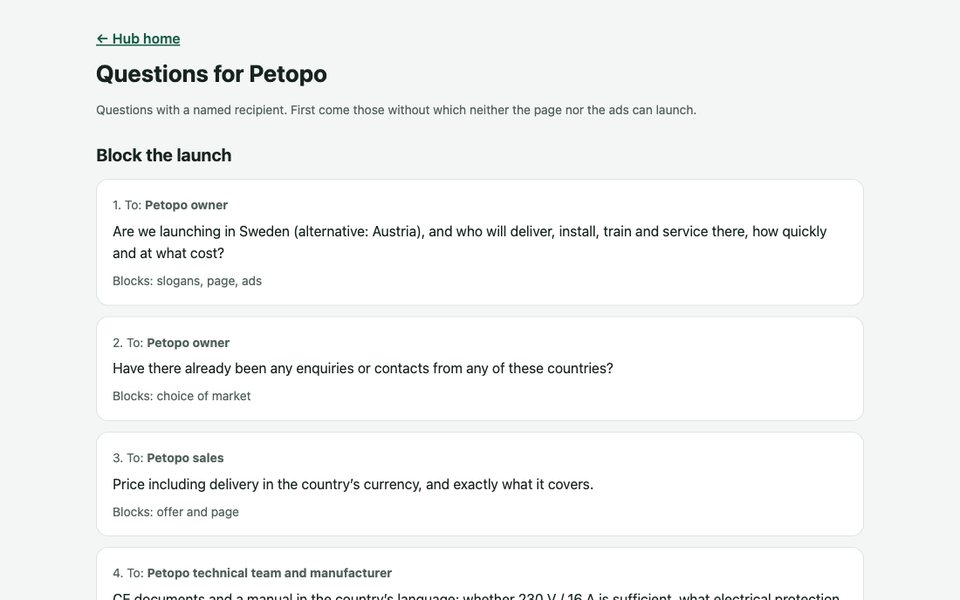
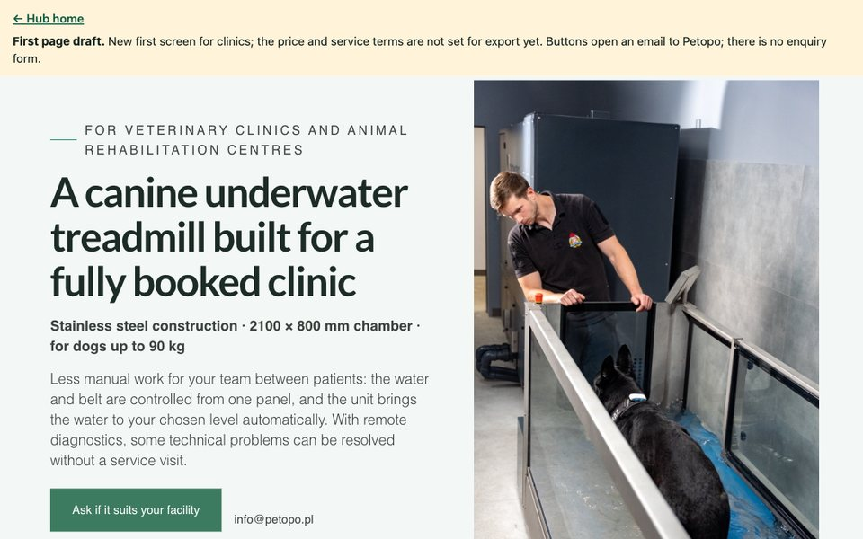

Petopo · project hub
Underwater treadmill outside Poland
Materials and earlier analyses are gathered, 6 communication ideas and a first page draft are ready, and 7 of 16 questions to Petopo need an answer before launch (proposed starting market: Sweden; alternative: Austria).
Status as of 26.11.2026

Project

2 directionsNEWNew sales pageTwo first screens with buying tools, each with the reasons behind it.
8 sectionsContent analysesWhat we found in the client materials, on the websites and in earlier studies.
4 marketsMarket analysesSweden, Austria, Czech Republic and England: audiences, competition, prices, requirements.
6 ideasIdeasCommunication ideas to choose from: take or reject each one.
16 questions7 block the launchQuestions for PetopoEach with a named recipient; launch blockers come first.
6 page sectionsPage draftFirst version of the landing page, with a new first screen for clinics.